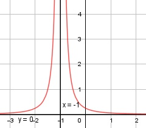

Aufgabe 108 1 f(x) = -------------- 4 * (x + 1)2 Quotientenregel erste Ableitung: u = 1, u' = 0 v = 4 * (x + 1)2 Kettenregel: v' = 8 * (x + 1) 0 * 4 * (x + 1)2 - 8 * (x + 1) * 1 f'(x) = --------------------------------------- 16 * (x + 1)4 -8 * (x + 1) -1 f'(x) = --------------- = ------------ 16 * (x + 1)4 2 * (x + 1)3 Quotientenregel zweite Ableitung: u = -1, u' = 0 v = 2 * (x + 1)3 Kettenregel: v' = 6 * (x + 1)2 0 * 2 * (x + 1)3 - 6 * (x + 1)2 * (-1) f''(x) = ---------------------------------------- 4 * (x + 1)6 6 * (x + 1)3 1,5 f''(x) = --------------- = --------- 4 * (x + 1)6 (x + 1)4 Zur Beurteilung, ob f'''(x) ≠ 0: (Begründung siehe Aufgabe 105) u' 0 f'''(x) = --- = ------------- --> v 4 * (x + 1)2 f'''(x) = 0 für alle x ≠ -1 Polstellen, Nenner = 0: 4 * (x + 1)2 = 0 |:4 (x + 1)2 = 0 |ⱱ x + 1 = 0 |-1 x = -1 Nenner = 0 und Zähler ≠ 0 --> senkrechte Asymptote Definitionsbereich: -∞ < x < ∞, x ≠ -1 Waagerechte Asymptote: 1 f(x) = --------------- = 0 für x --> ± ∞ 4 * (x + 1)2 f(x) ist > 0 für alle x Wertebereich: 0 < f(x) < ∞ Symmetrie zur y-Achse bzw. zum Punkt (0|0): 1 f(-x) = -------------- ≠ f(x) ≠ -f(x) 4 * (-x + 1)2 --> keine Punkt-, keine Achsensymmetrie Nullstellen: f(x) = 0 1 --------------- = 0 |*4 * (x - 3)2 4 * (x + 1)2 1 = 0 Widerspruch --> keine Nullstelle Schnittpunkt mit der y-Achse: x = 0 1 1 f(0) = ------------ = ----- = 0,25 4 * (0 + 1)² 4 Sy(0|0,25) Extrempunkte: f'(x) = 0 1 --------------- = 0 |*2 * (x - 3)3 2 * (x + 1)3 1 = 0 Widerspruch --> keine Extrempunkte Wendepunkte: f''(x) = 0 1,5 --------- = 0 |*(x + 1)4 (x + 1)4 1,5 = 0 Widerspruch --> keine Wendepunkte Graph:
